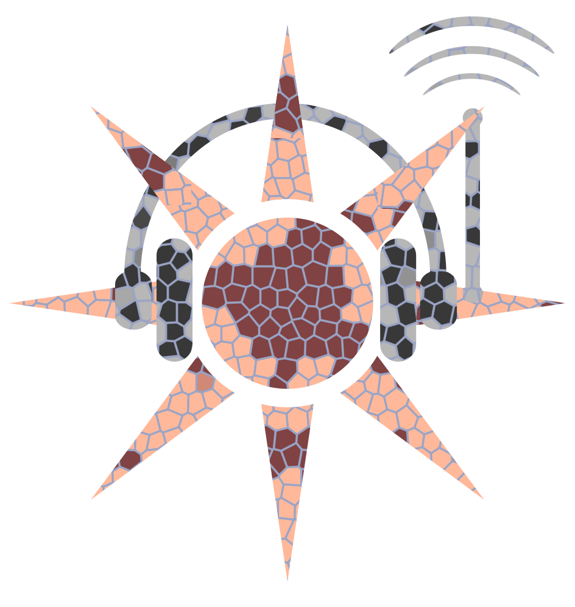
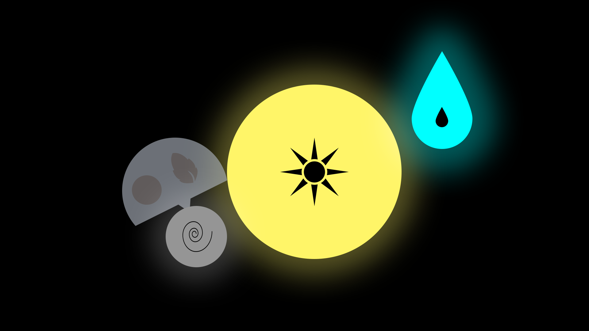
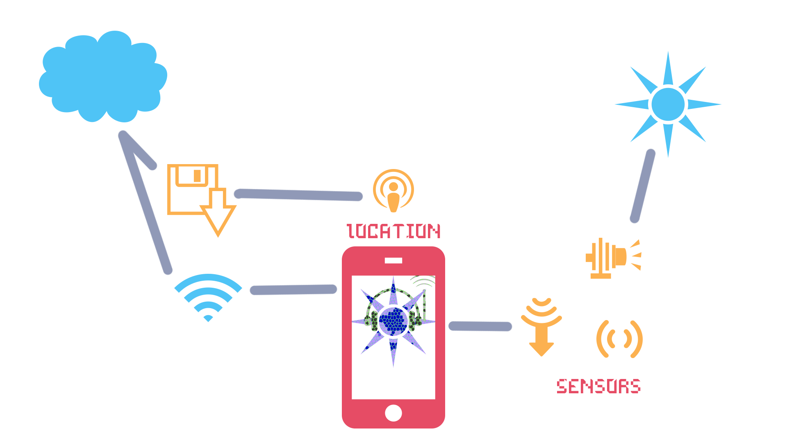
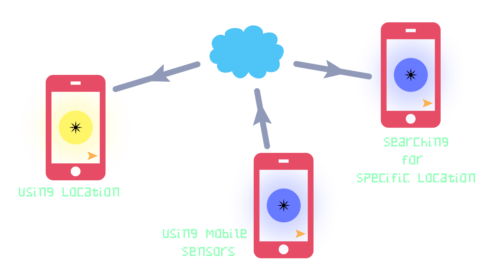
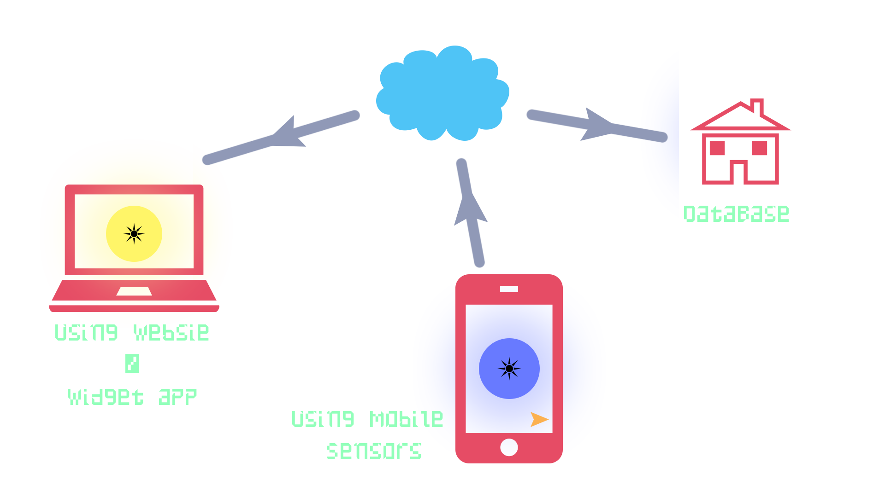

What it is
This is an Application / website that converts weather related data into a type of "Mood". Each specific data, e.g. humidity etc will be assigned a specific colour and depend on how dense the data is the deeper or lighter the colour is.
This App / website is also able to use the sensors on your mobile device to create a realtime weather tracker. This data will be displayed in realtime and converted into the "Mood" format.
The "Mood" format, rather than displaying the users "Mood" towards the weather, reflects the weathers "Mood" towards the user, giving a more interesting impression on what the data is, because at the end of the day, its just numbers.
This is not a prediction App, this displays realtime information!
What Devices?
This app could be present on almost anything, to desktop computers to smartphones to even watches! The vision is limitless.
However to utilize this app / website to its fullest, mobile devices are the go to! Turning your desktop computer into a weather sensor is'nt entirely possible, but that doesn't mean it cant use the other functionality!

Interfaces
The one and only Concept
Unfortunatly there was only one way to display this data into a "Mood", Colour! and the best way to display this colour is to be simplistic.
This app would use the full-screen functionality of any device (except desktop, but they can hae widgets!) Since this would become cluttered with different data dots, depending on user preferences, the app needed to also have a simplistic menu and navigation structure. What isn't specfically showen in this concept is the ability to conver those icons in the middle to thier raw data (for the nerds out there :p).
Customizable interface
A function that has been on my mind is the ability to customize the dot shapes, and maybe even get rid of the display icons altogether. The way users would interact with this, users will be able to press and hold their chosen dot, and select from a variaty of relevant shapes with a simple swipe of a finger.
However, doing this, the dots will have to be structured in a specific form, to avoid selecting the wrong dot, and or icon.
Weather Experiment Card

Mobile Sensor Card
This card represents data that is used from mobile sensors and cannot be used on a desktop.
How it works
Moody weather reacts to realtime data from the weather services database on the cloud and converts it to colour, aka "Mood". From here it converts this data (numbers) into the a specific format of colours, e.g. if its sunny the dot will be yellow. Different colour densities mean different thing, depending on how high or low the data is.
For instance the higher the wind velocity, the greyer the wind dot is. Of course this doesnt mean its restricted to grey, going back to the sunny dot, if its rather cloudy out there perhaps the dot will turn slighly blue (meaning its getting colder!).
You are able to retrive your location data and compare it with other location data, just in case you dont know what to wear when you go to town! Dispite this functionality, not only can you retrieve weather information from the cloud, you can also upload this data using your mobile device sensors to convert your device into a weather station (sorry desktop users!). This provide even more data to not only yu but the services that use it!
Audience
Who needs a set audience when anyone can use it! Anyone who is willing to either share weather related data can so, and anyone willing to just look at the weathers "Mood" with interest.
Potentially this app could also be useful for comercial use! With the ability to look quickly and understand the data they can make descisions based on the weathers "Mood". Rather than fluffing through all the numbers etc.
Mobile Networks
As mentioned, the way this will be used on mobile is retrieving and sending information. The data is rerieved from the cloud and sent to the phone, but is also is able to use the sensors on your mobile to send realtime data back to the cloud and update it. Also users will be able to set the app as a background or other means.
The user interaction, with the inclusion of the previous interface discription, are as follows:
-The user is able to retrieve thier location data
-Swipe to another section that has been set another location by the user
-Edit the amount of data displayed
-Edit data dot shape
-Search up realtime data of a specific location using the title displayed at the top of the screen.
Desktop Networks
This card displays the interaction between mobile, desktop and the cloud. However desktop is not able to use the mobile sensors to send data to the cloud, only retrieve it. Desktop is however able to still retrieve thier specific geo-location.
Also here is a widget design, incase users want to see it at all times, rather than use the website.